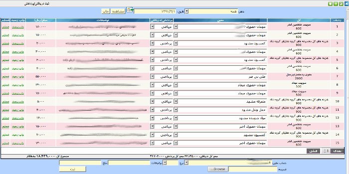

در این صفحه کاربر می تواند در صورت پرداخت وجه یا دریافت وجه اطلاعات آن را با الصاق رسید یا فاکتور ( بصورت اسکن شده باید باشد) در سیستم حسابداری ثبت نماید و به حسابدار اصلی یا گروه حسابداران کمک کند.

ابتدا حساب معین انتخاب شود سپس نوع در یافت که شامل پرداختی یا دریافتی می شود پس از توضیحات مربوط به آن باید وارد شود و پس از آن مبلغ و در آخر فایل ضمیمه که قبلا اسکن شده است .
تذکر: لازم به ذکر است جهت سرعت بیشتر بهتر است فایل با کیفیت پایین اسکن شود.
نکته ۱: کلیه اسناد ثبت شده به تاریخ روز خواهد بود.
نکته ۲: طرف دیگر رکورد حسابداری به حساب صندوق دفتر ثبت می شود .
نکته ۳: کاربران بر اساس سطوح دسترسی خود حسابهای مختلف را مشاهده خواهند کرد.
نکته ۴: فایل ضمیمه حتما باید الصاق شود.
نکته۵: پس از ثبت هر رکورد کاربر می تواند رسید مربوط به آن را در صورت نیاز چاپ کند.